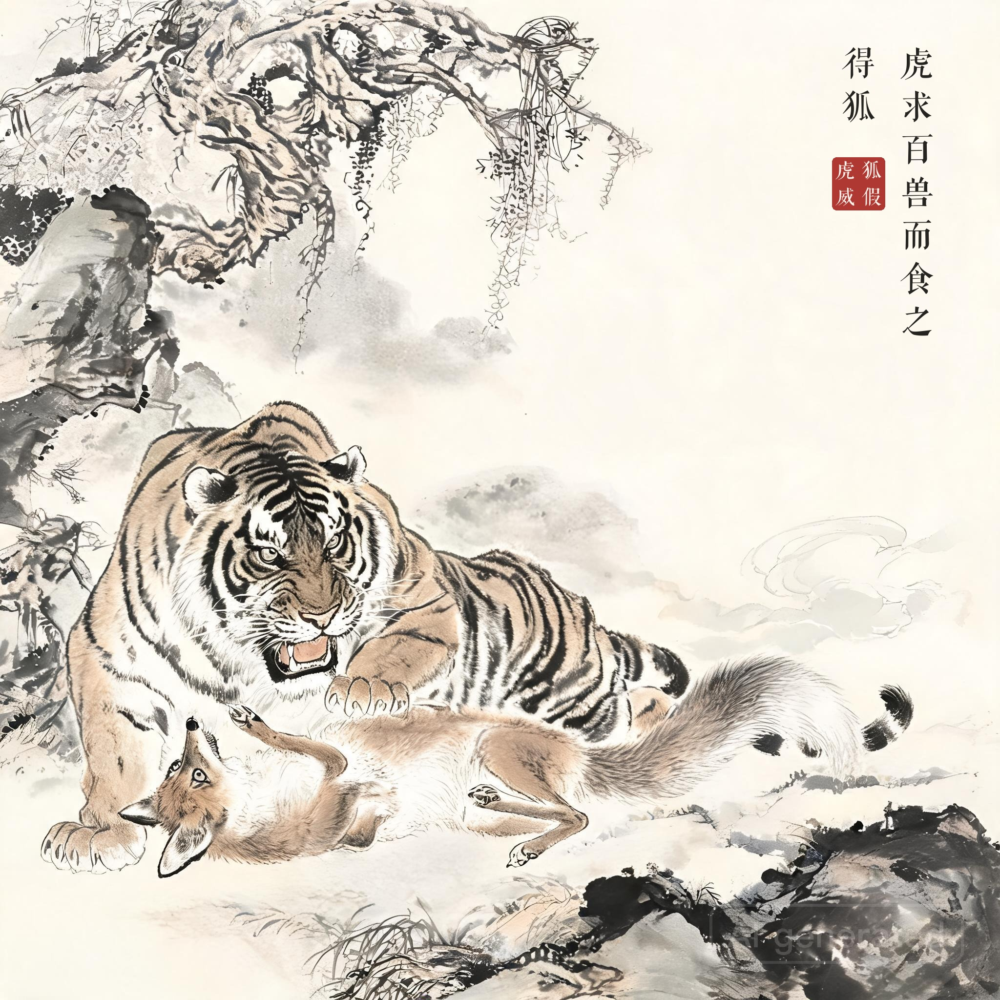
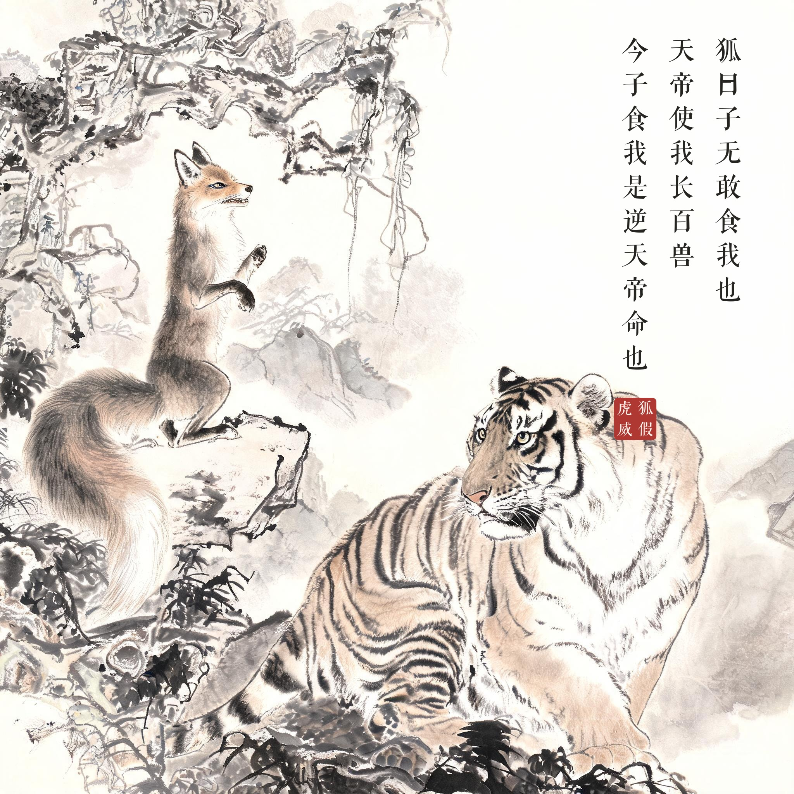
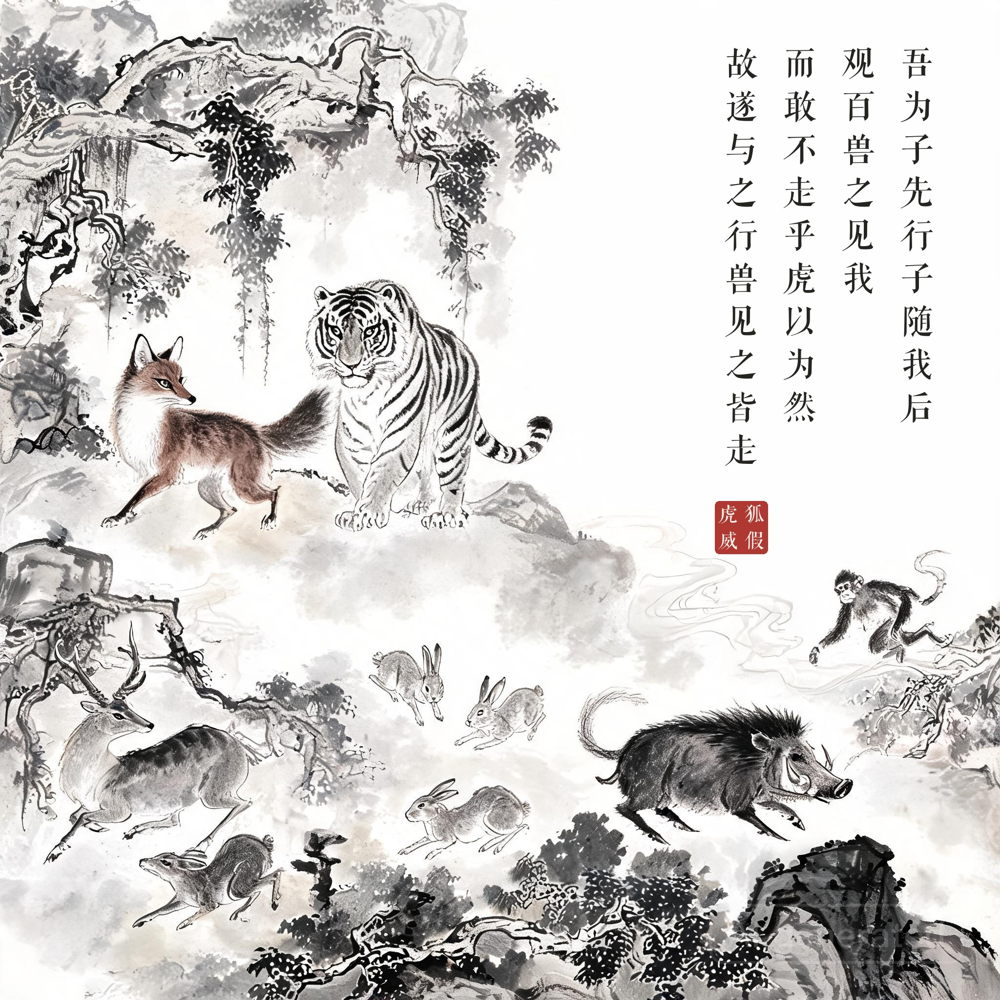
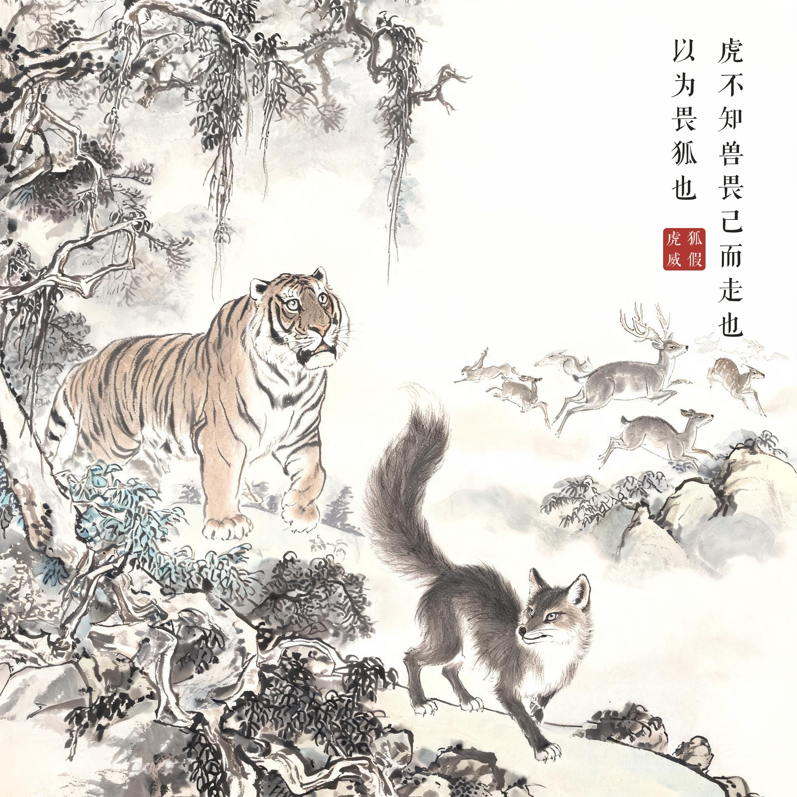

《战国策 · 楚策一》
虎求百兽而食之，得狐。狐曰：子无敢食我也，天帝使我长百兽，今子食我是逆天帝命也。子以我为不信，吾为子先行，子随我后，观百兽之见我而敢不走乎。虎以为然，故遂与之行。兽见之皆走。虎不知兽畏己而走也，以为畏狐也。
老虎捕捉百兽为食，抓到了一只狐狸。狐狸说："你不敢吃我！天帝派我做百兽之首，今天你吃我就是违抗天帝之命。你若不信，我在前头走，你跟在我后面，看百兽见了我有敢不逃的吗？"老虎信以为真，就跟它同行。百兽见了它们果然四散奔逃。老虎不知道百兽怕的是自己，还以为它们怕的是狐狸。
倚仗别人的势力欺压、吓唬人；也提醒看人看事要看透"谁才是真正的威势所在"。